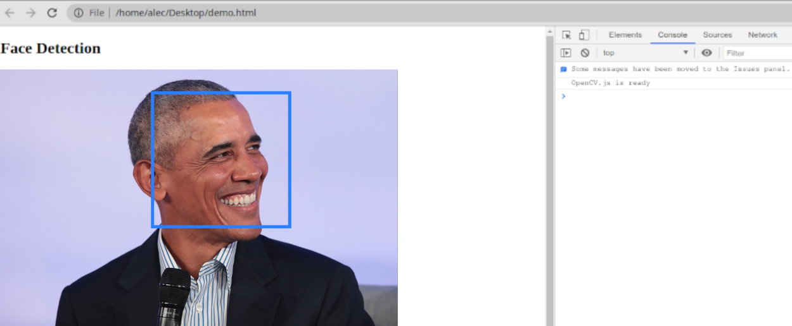

Machine Learning
overview
Machine found cancer
A yellow box indicates where an artificial intelligence system found cancer hiding inside breast tissue, in an undated photo released by Northwestern University in Chicago, Jan. 1, 2020.
Machine found vechicle damage
Image was taken from Nanonets
Deepfake
Image was taken from open-source project on GitHub
Machine painted the picture
This photo provided by Christie's shows a portrait of Edmond de Belamy, a work of art created by artificial intelligence. Christie's/AP
Machine composed the music
Data Analysis
Machine learning helps to find patterns in data
We are drowning in information and starving for knowledge— John Naisbitt
Machine Learning Defined
The field pioneer Tom Mitchell wrote in his Maching Learning book:
A computer program is said to learn from experience E with respect to some class of tasks T and performance measure P if it's performance at tasks in T, as measured by P, improves with experience E.
Traditional programming
Results by program with data
Traditional programming
Results by program with data
Machine Learning
Program by results and data
Machine Learning
Program by results and data
Machine Learning
The machine trying different rules
Rules
? ? ?
Supervised Learning
In supervised learning, the goal is to learn the mapping (the rules) between a set of inputs and outputs.
Forest fires
Forests are highly flammable in hot weather
Mapping
| temperature | fires | date |
| 17 | 0 | 03/2019 |
| 22 | 0 | 04/2019 |
| 27 | 1 | 05/2019 |
| 32 | 5 | 06/2019 |
| 35 | 12 | 07/2019 |
| 38 | 25 | 08/2019 |
Data is a new oil
classification
Input will be low, medium, high
Separating data points with a line
classification model
A popular algorithms
- Logistic regression and multinomial regression
- Artificial Neural networks
- Decision tree, forest, and jungles
- SVM (support vector machine)
- Perceptron methods
- Bayesian classifiers (e.g., Naive Bayes)
- Nearest neighbor methods (e.g., k-NN or k-Nearest Neighbors)
Regression
Input will be scalar
Regression model
A popular algorithms
- Simple and multiple linear regression
- Decision tree or forest regression
- Artificial Neural networks
- Ordinal regression
- Poisson regression
- Nearest neighbor methods (e.g., k-NN or k-Nearest Neighbors)
Unsupervised Learning

Unsupervised Learning
Sorting by color (one is properties of cubes)
Unsupervised Learning

image from nlml.github.io
clustering

image from https://i.stack.imgur.com/cIDB3.png
{kind=link}
Association
Anomaly Detection
Dimensionality reduction
A popular algorithms
- Clustering:
- K-means clustering
- Hierarchical clustering
- Anomaly detection:
- Support vector machine (one class)
- PCA (Principle component analysis)
Semi-supervised learning
Generative Adversarial Networks
Reinforcement Learning
Reinforcement Learning
application areas include
- 2D and 3D feature toolkits
- Egomotion estimation
- Facial recognition system
- Gesture recognition
- Human–computer interaction (HCI)
- Motion understanding
- Object detection
- Segmentation and recognition
- Structure from motion (SFM)
- Motion tracking
OpenCV machine learning
- Boosting
- Decision tree learning
- Gradient boosting trees
- Expectation-maximization algorithm
- k-nearest neighbor algorithm
- Naive Bayes classifier
- Artificial neural networks
- Random forest
- Support vector machine (SVM)
- Deep neural networks (DNN)
Face detection
Capture video from webcam
let video =
document.querySelector('#videoInput');
navigator.mediaDevices.getUserMedia(
{ video: true, audio: false }
)
.then(function(stream) {
video.srcObject = stream;
video.play();
})
let video =
document.querySelector('#videoInput');
navigator.mediaDevices.getUserMedia(
{ video: true, audio: false }
)
.then(function(stream) {
video.srcObject = stream;
video.play();
})
I saw you somewhere!
let classifier = new cv.CascadeClassifier();
classifier.load('haarcascade_frontalface_default.xml');
let classifier = new cv.CascadeClassifier();
classifier.load('haarcascade_frontalface_default.xml');
Supervised ML and classification
The End
Thanks for attention!